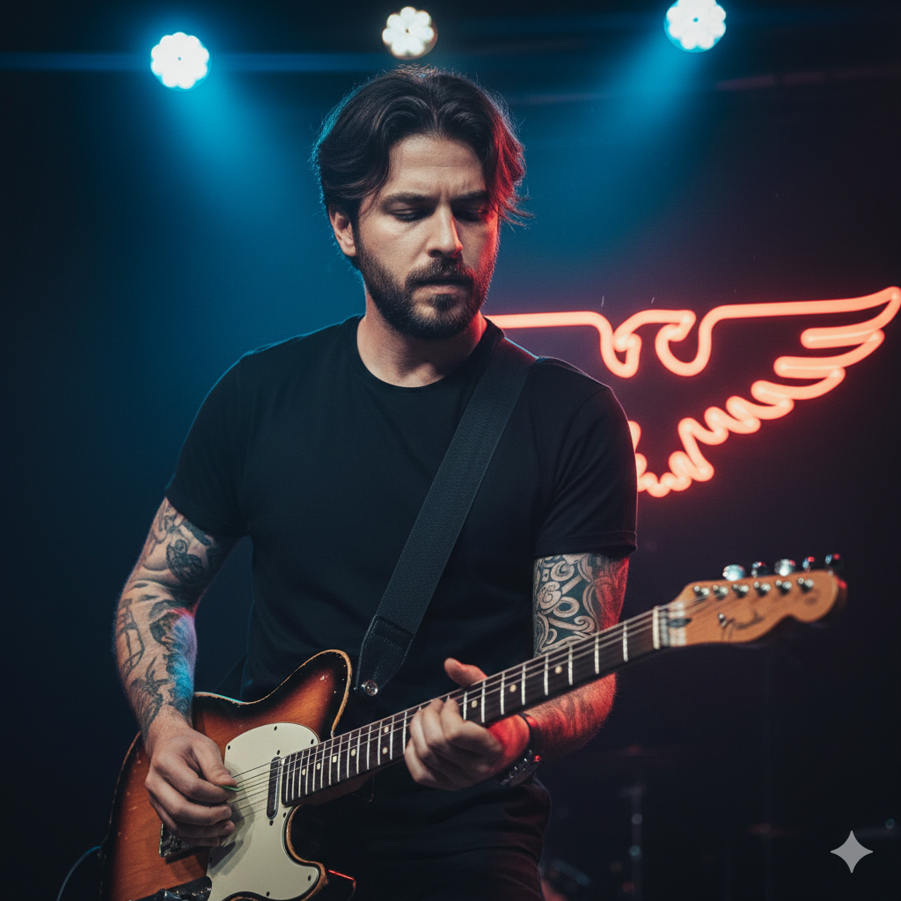
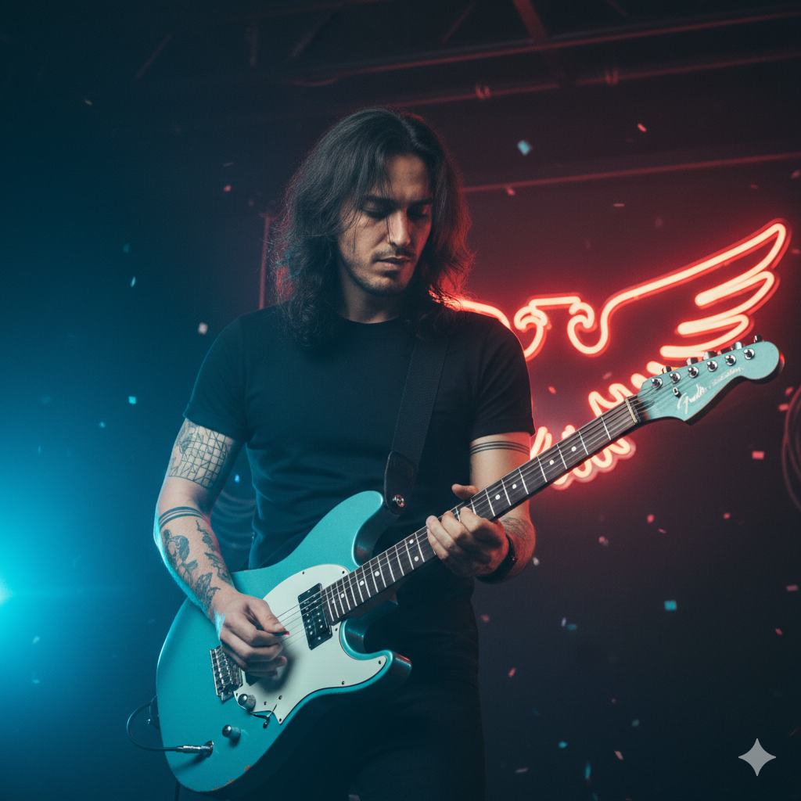
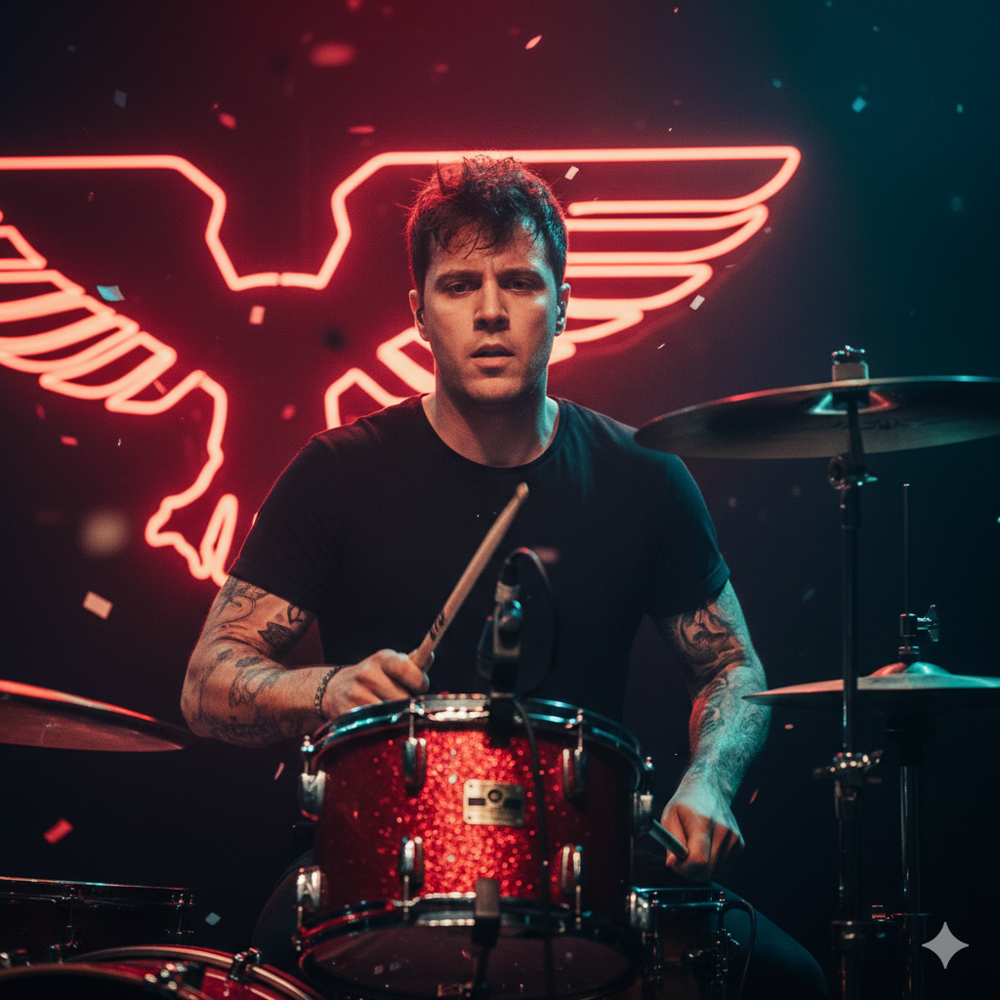
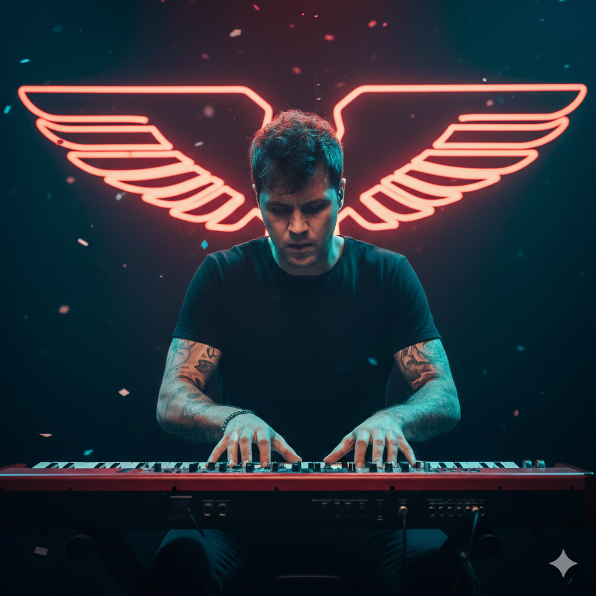

Cem Yıldırım, 1998 İstanbul doğumlu ve KAFES’in güçlü ve etkileyici vokalidir. Müzikle tanışması çocukluk yıllarına dayanır; ilk olarak gitar çalmaya başladı ve kısa süre sonra kendi şarkı sözlerini yazmaya yöneldi. Lise yıllarında arkadaşlarıyla kurduğu küçük gruplarla sahne deneyimi kazandı, üniversite yıllarında ise duygusal ve alternatif rock dünyasına adım attı. Cem, şarkılarında gençliğin karmaşasını, şehir hayatının getirdiği yalnızlığı ve insanların iç dünyasındaki çelişkileri yansıtır. Onun yorumladığı şarkılar dinleyiciye sadece müzik değil, aynı zamanda bir hikâye ve duygu deneyimi sunar. Sahne performanslarında Cem, karizmatik ve samimi bir duruş sergiler; mikrofonun önünde tamamen dönüşür ve her şarkının ruhunu dinleyiciye taşır. Şarkı sözlerini yazarken kendi yaşadıklarından, gözlemlediği sosyal olaylardan ve çevresindeki insanların hikâyelerinden ilham alır. Bu yüzden her şarkı hem kişisel hem de evrensel bir his barındırır. Cem’in sesi, KAFES’in karakteristik atmosferini ve duygusal yoğunluğunu belirleyen en önemli unsurdur.

Mert Karaca, 1997 İzmir doğumlu ve KAFES’in baş gitaristidir. Müzik kariyerine klasik rock ve blues ile başladıktan sonra alternatif rock ve indie tınılarına yöneldi. Kendi tarzını yaratmak için farklı teknikler deneyen Mert, grubun şarkılarındaki melodik ve duygusal derinliği şekillendiren isimdir. Gitar soloları ve akor geçişleri, şarkıların ruhunu belirleyen önemli dokunuşlardır ve Mert’in yaratıcılığı sayesinde her performans taze ve sürükleyici olur. Mert’in sahne duruşu enerjik ve etkileyicidir; izleyiciyle göz teması kurmayı ve şarkının duygusunu direkt aktarmayı sever. Stüdyo çalışmalarında titiz ve detaycıdır; her notanın doğru tınıda çalınması ve şarkının atmosferinin korunması için yoğun çaba harcar. Müziğe yaklaşımı disiplinli ama aynı zamanda duygusaldır; teknik mükemmellikten çok, şarkının verdiği hissi ön planda tutar.

Arda Demir, 1996 Ankara doğumlu ve grubun bas gitaristidir. Arda, ritim ve groove anlayışıyla KAFES’in müziğine sağlam bir temel kazandırır. Bas gitarıyla şarkılara derinlik ve duygu katarken, grubun diğer enstrümanlarıyla uyumlu bir şekilde çalışmayı öncelikli hedef olarak görür. Müziğe yaklaşımı, minimalizm ve hissiyatı birleştirmek üzerine kuruludur; her notayı sadece teknik olarak çalmakla kalmaz, aynı zamanda şarkının duygusunu güçlendirecek şekilde yorumlar. Stüdyo kayıtlarında Arda, grubun sound’unun tutarlılığını korumak için büyük bir titizlik gösterir. Sahne performanslarında sakin ama etkili duruşuyla dinleyicinin dikkatini ritimlere çeker. Arda, grup içinde çoğu zaman sessiz bir güç olarak tanımlanır; sahnedeki enerjiyi yönlendirmek yerine, şarkının kalbini oluşturan ritimleriyle fark edilir.

Onur Kaya, 1995 Bursa doğumlu ve grubun davulcusu olarak KAFES’in ritmini yönetir. Küçük yaşlardan itibaren ritim ve perküsyon ile ilgilenmiş, farklı müzik türlerinde deneyim kazanmıştır. Sahne performanslarında hem enerjik hem disiplinli bir duruş sergiler; şarkıların temposunu belirlerken aynı zamanda dinleyicinin ruhuna yön verir. Onur, sadece teknik bir davulcu değildir; şarkıların duygusal atmosferini ve yoğunluğunu artırmak için ritimleri bilinçli olarak tasarlar. Her performansta grup üyeleriyle uyum içinde çalışır ve şarkının duygusunu sahneye taşır. Onur’un müzik anlayışı, disiplin ve yaratıcılığı birleştirir; stüdyoda notaların hassasiyetine dikkat ederken sahnede enerjiyi maksimuma taşır.

Can Aksoy, 1998 İstanbul doğumlu ve grubun klavyecisi olarak KAFES’in atmosferik dokusunu oluşturur. Müzik eğitimini İstanbul’da tamamlamış ve elektronik sound deneyimleriyle şarkılara modern bir boyut kazandırmıştır. Klavye ve synth ile sadece melodik öğeler değil, aynı zamanda şarkıların ruhunu ve duygusal derinliğini güçlendiren dokunuşlar ekler. Can, yaratıcı sürece sürekli katkıda bulunan bir isimdir; grup şarkılarını hazırlarken yeni melodik fikirler sunar, şarkının bütününü zenginleştirir. Sahne performansında enerjik ve göz alıcı bir duruş sergiler; elektronik ve akustik elementleri dengeli şekilde kullanarak KAFES’in karakteristik sound’unu destekler. Can’ın çalışmaları, grubun müziğini hem modern hem de duygusal bir deneyim hâline getirir.